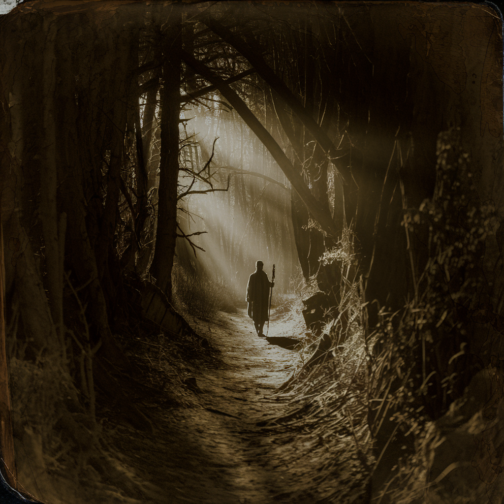

[verse 1]
Just as shepad dey guide en sheep, na so too God dey guide and provide for mi;
so hongry nor go kill mi.
[chorus]
I nor go fear
God riva for me God kwayet me
I nor go fear
[verse 2]
E dey make mi rest for where good tins dey
kon take mi pass river wey kwayet.
E dey make mi strong.
E dey guide and take mi pass di rite road,
so dat pipol go honor en name.
[chorus]
I nor go fear
God riva for me God kwayet me
I nor go fear
[verse 3]
Even doh I waka pass di place wey dark pass and where deat dey, I nor go fear anytin, bikos E dey with mi;
en rod and staff dey protet and konfort mi.
[chorus]
I nor go fear
God riva for me God kwayet me
I nor go fear
[verse 4]
E dey give mi food to chop for my enemies present.
E pour oil for my head and my cup kon full dey trowey.
[chorus]
I nor go fear
God riva for me God kwayet me
I nor go fear
[outro]
True-true, en goodness and love wey nor dey fail go dey follow mi till I die
and I go dey for God house forever and ever.
foreva and eva
follo mi follo mi
foreva and eva
follo mi
follo mi
follo mi
Adapted from Psalm 23, Nigerian Pidgin Bible, © Wycliffe Bible Translators, Inc. 2020 in cooperation with The Nigerian Pidgin Translation Committee. Used with permission of SIL International, Dallas TX. All rights reserved.
Note: All song analyses draw on material and a theoretical framework from the site Build Little Worlds.